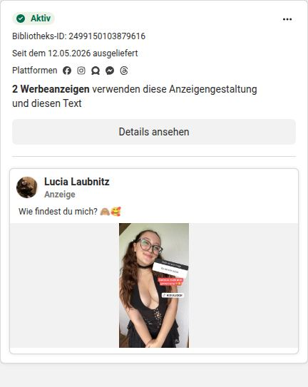
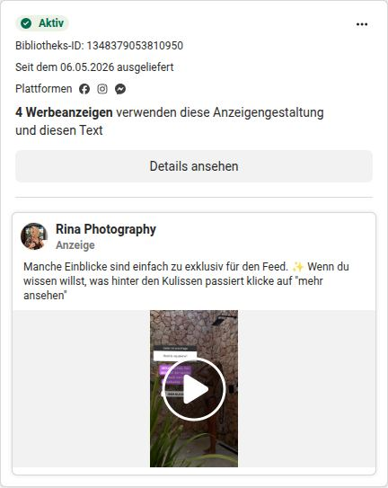
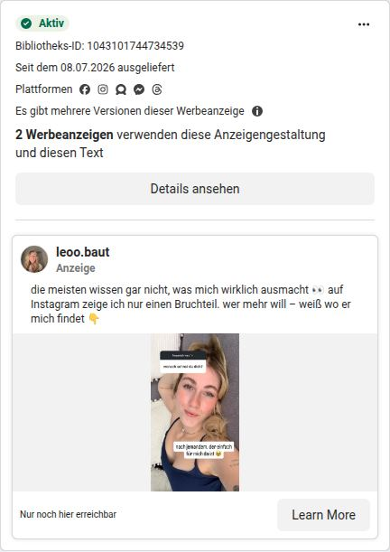
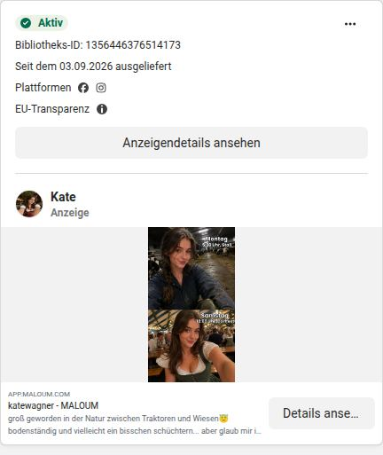
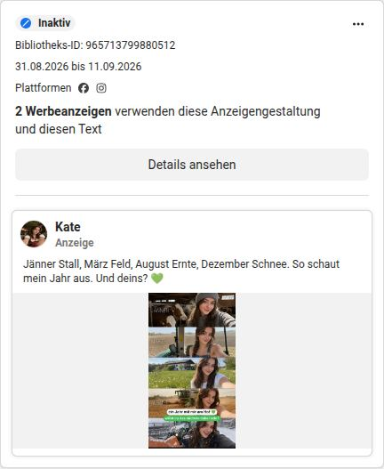
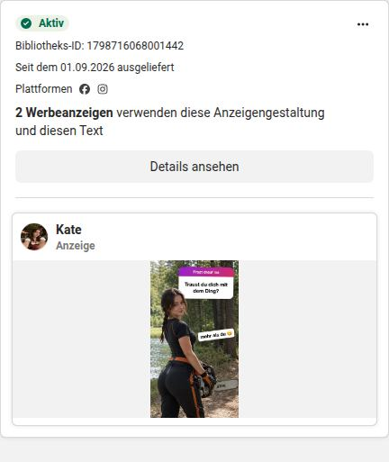

Was die Konkurrenz macht.
53 Creator-Ads aus der Meta Ad Library. Wer womit wirbt, wer welches Format zuerst hatte und was wir daraus übernehmen.
Was wir gesehen haben
Wir haben die öffentliche Meta Ad Library für Deutschland mit rund 45 Suchen durchsucht und 53 Ads von 7 Konkurrenz-Creatorinnen gefunden, 18 davon laufen aktuell. Die meisten führen ebenfalls auf MALOUM.
- Die Creatorin ist der Absender. Alle lang laufenden Ads kommen von der Seite der Creatorin, nicht von einer Marke.
- Handy statt Design. Selfies, Story-Screenshots, kurze Clips. Keine gestalteten Kacheln.
- Eine klare Rolle. Kate ist das Dorfmädchen, Lucy die Gamerin, Rina die Fotografin, Leni steht im Dirndl vor den Bergen.
- Viele Varianten. Lucy fährt ein Format mit bis zu 14 Varianten, Rina mit bis zu 8. Längste Laufzeit: 183 Tage.
Die wichtigsten Ads
Klick auf das Bild öffnet die Ad direkt in der Meta Ad Library.

In der Meta Ad Library öffnen ↗

In der Meta Ad Library öffnen ↗

In der Meta Ad Library öffnen ↗

In der Meta Ad Library öffnen ↗

In der Meta Ad Library öffnen ↗

In der Meta Ad Library öffnen ↗
Wer hatte das Format zuerst?
Laut Ad Library lief unser Fragesticker-Format zuerst. Lucy startete 33 Tage später, Marlene und leoo.baut folgten. Der Unterschied: Ihre Ads laufen seit Monaten, unsere wurden gesperrt, weil wir sie mit Chat-Texten kombiniert haben.
Lia Engel: Fragesticker-Story „Auf Instagram kaum. Auf Maloum ja.“ ↗
Lucy: erste Ad mit Fragesticker („Wer möchte mit mir zocken?“) ↗
Stella: persönlicher Brief ↗
Lucy: „Wie findest du mich?“, läuft bis heute ↗
Marlene: Fragesticker plus „Schreib mir… ich antwort dir auch“ ↗
leoo.baut: Fragesticker plus „nur einen Bruchteil“ ↗
Nicht alles kam von uns: „Hab jetzt kein Snap mehr…“ lief bei Kate und Marlene schon ab Januar 2026, vor unserer Snapchat-Variante im Mai.
Was wir übernehmen und was nicht
Übernehmen
- Creatorin als Absender (Partnership Ads)
- Fragesticker mit Fragen zu Look und Alltag
- Klare Persona je Creatorin
- Kurze Behind-the-Scenes-Clips
- Ein gutes Format, viele Varianten
Nicht übernehmen
- Lucys „18 und geh noch zur Schule“. Bei Adult-Content rechtlich und ethisch tabu.
- „Chatte jetzt mit mir“, „schreib mir zuerst“
- Freizügige Bildausschnitte, wie Lucy sie nutzt
Grenzen der Recherche: Ohne Facebook-Login zeigt die Ad Library nur rund 12 Ads pro Suche, das ist eine Stichprobe. Abgelehnte Ads erscheinen dort nie. Eine lange Laufzeit deutet auf Erfolg hin, beweist ihn aber nicht. Alle 53 Ads mit Links: vollständiger Konkurrenz-Report.